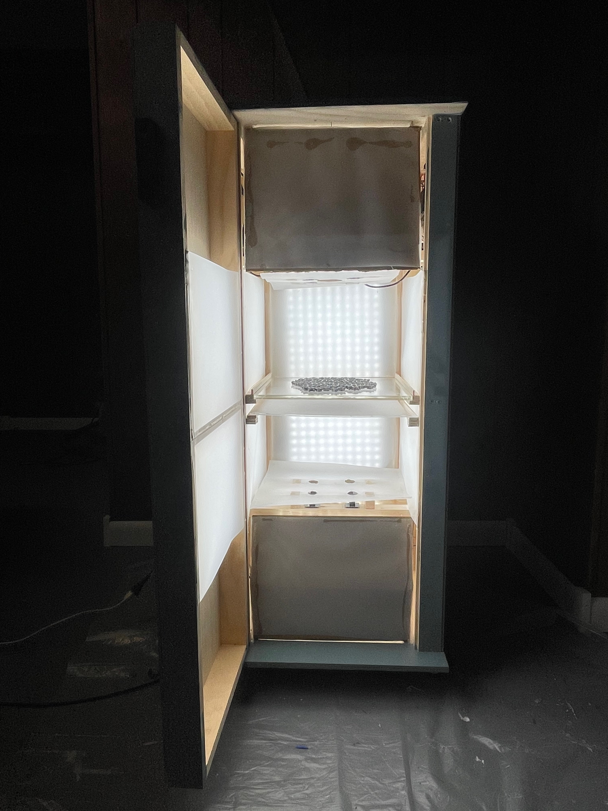
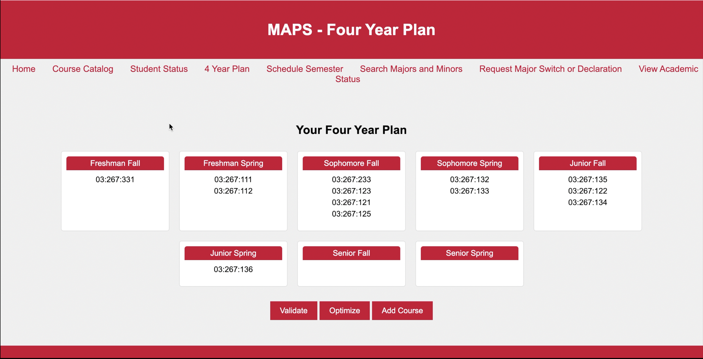
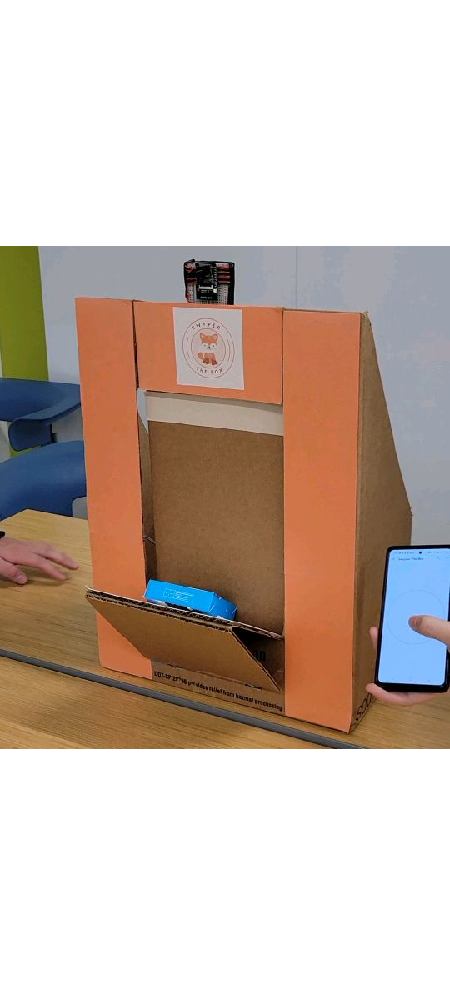
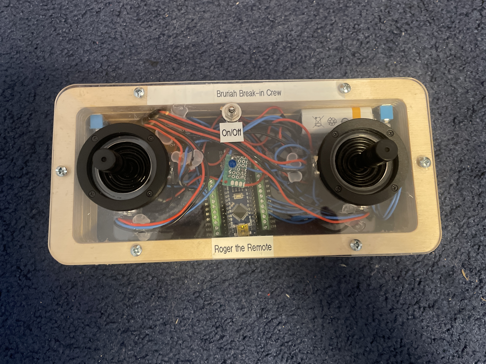

Selected Work
Projects &
Builds

Computer Vision
Smart Inspection for Fastener Testing (SIFT)
A device that automatically inspects metal nuts for defects using computer vision and machine learning techniques. This group project was sponsered by P&R Fasteners Inc. and was developed as part of the Rutgers ECE capstone design course.

Robotics & Computer Vision
King's Gambit 2.0
A chess-playing robot that uses computer vision to detect board state and a decision engine to select and execute moves with a robotic arm. This group project was chosen to present at the Rutgers Honors Engineering Symposium in 2024.

Web / Full-Stack
My Academic Planning System (MAPS)
A web application to help university students plan their academic journey — mapping out courses, requirements, and scheduling across semesters.
View on GitHub →
Memory Systems
Data Retention Time Testing
Tested the data retention time of gain cell embedded dynamic random access memory (GC-eDRAM), characterizing how long cells reliably hold a written value under varying conditions. This research was done as part of the Bar-Ilan University-Yeshiva University Summer Science Research Internship.

Embedded Systems
SwyperTheBox
A device that automatically accepts mail packages at the door — handling detection, actuation, and confirmation without any manual interaction. This group project was chosen to present at the Rutgers Honors Engineering Symposium in 2023.

Hardware / RF
Drone Transmitter
A custom radio transmitter designed to interface with the Beta65S Lite Micro Whoop Quadcopter V2, built from scratch to explore RF communication and drone control protocols.
View Images →